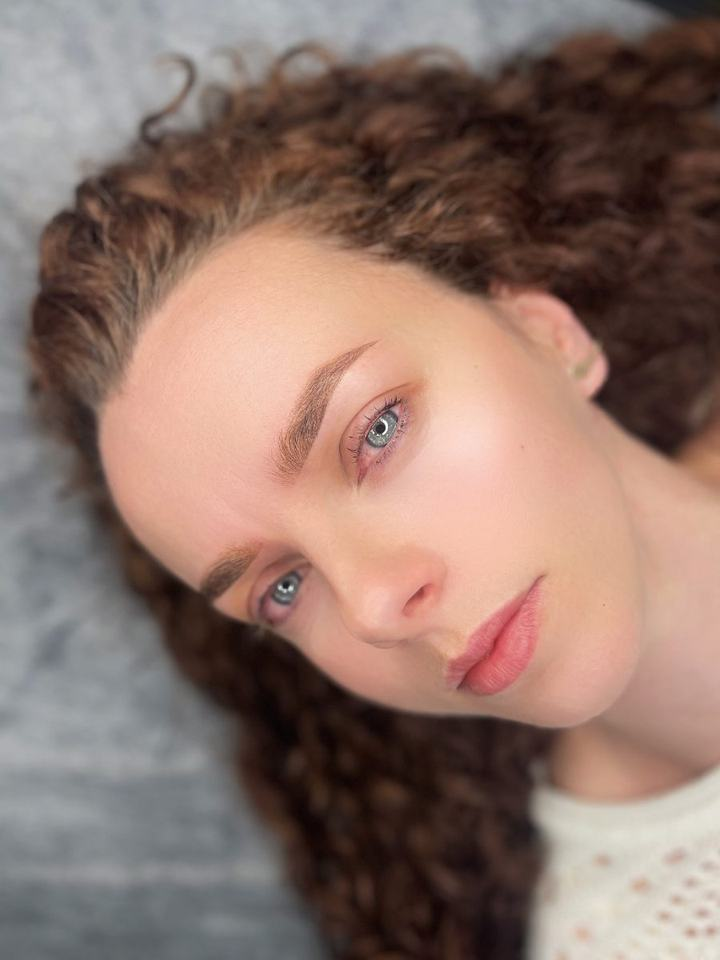
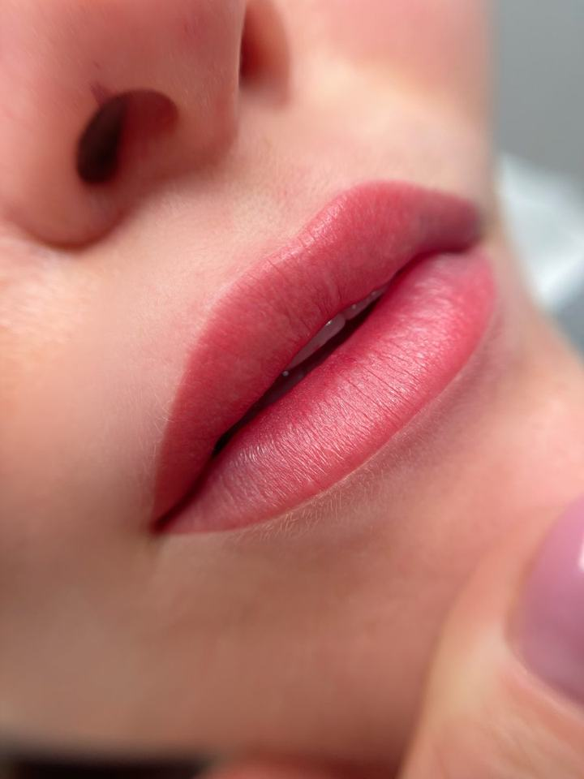
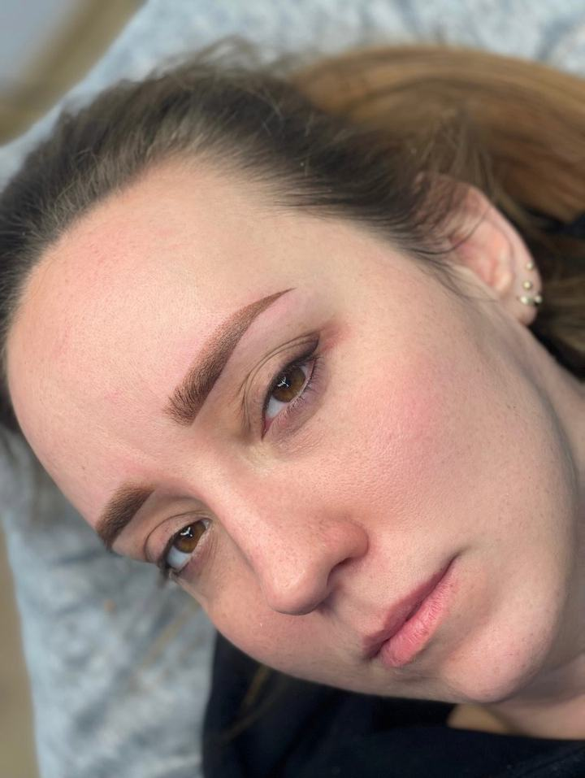
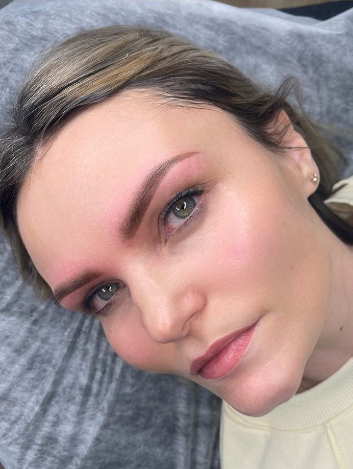
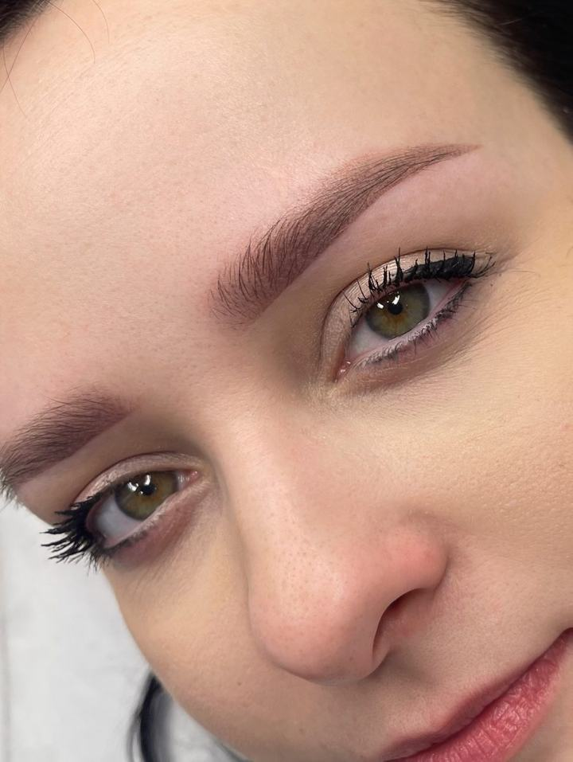
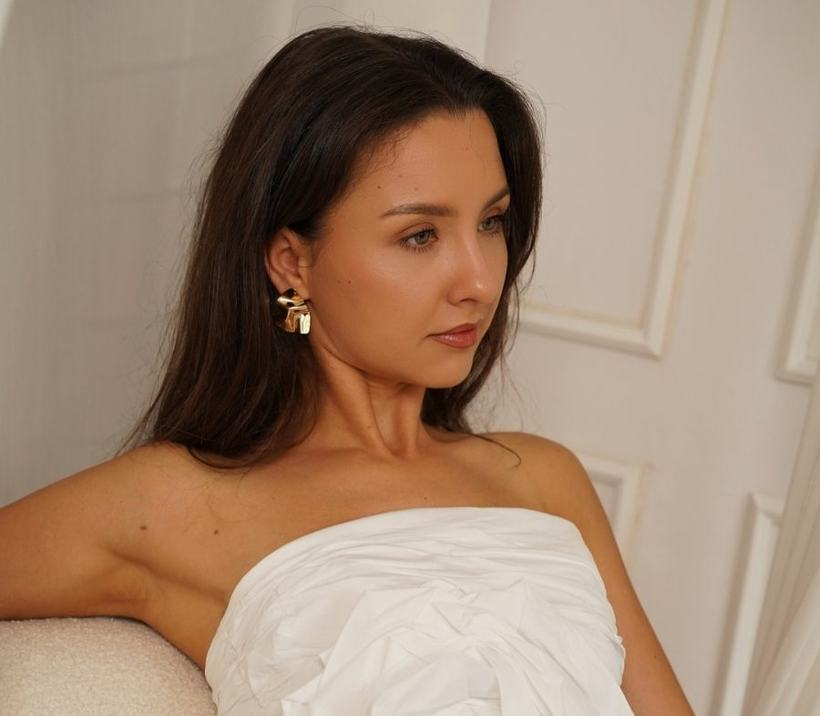
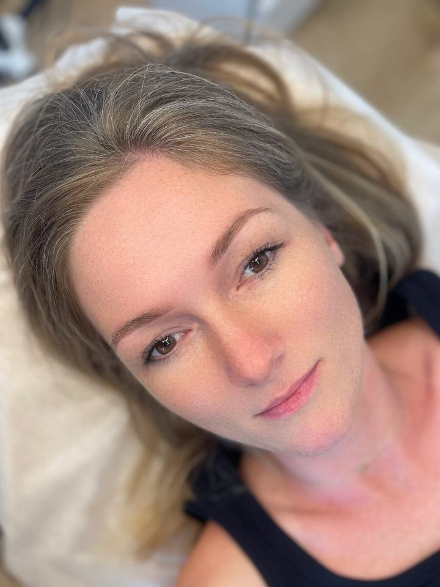
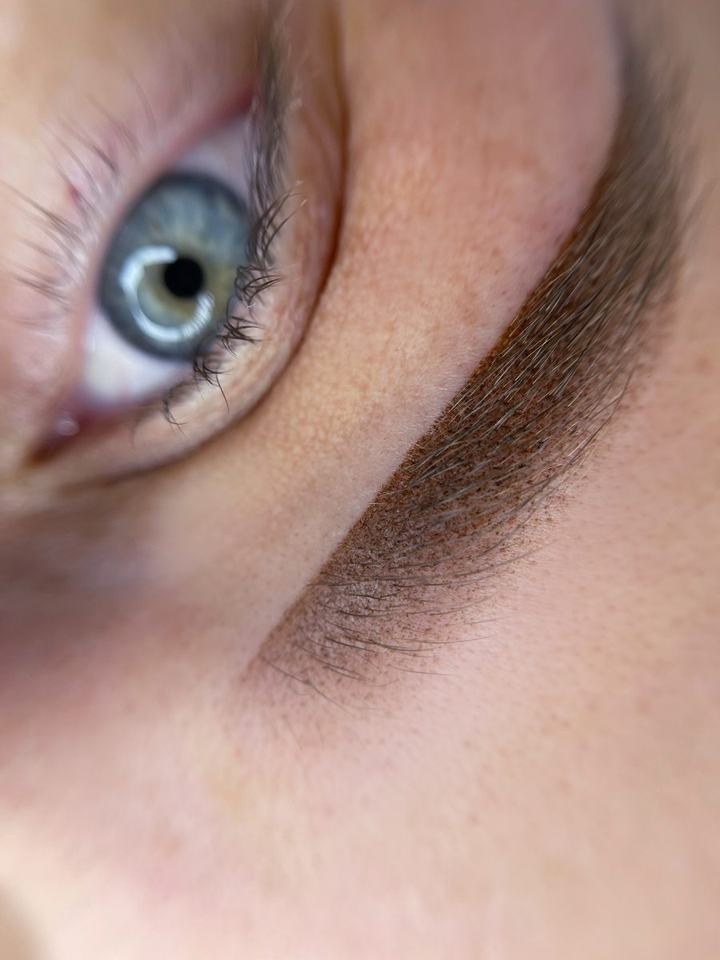
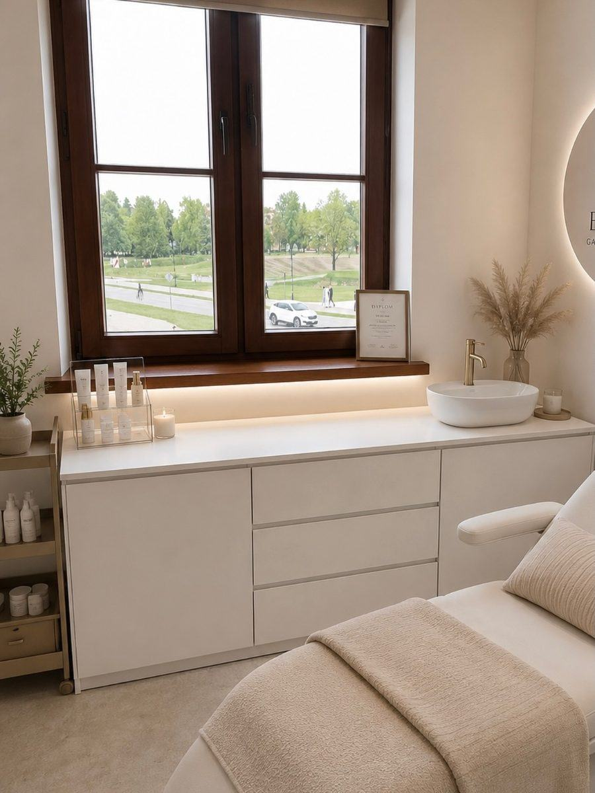

Naturalny makijaż permanentny brwi, ust i powiek
Lekki efekt, który po wygojeniu podkreśla urodę, a nie ją zmienia. Kształt, technikę i kolor dobieram razem z Tobą, do rysów twarzy i typu skóry.
Trzy zabiegi, jeden cel: naturalność
Co mówią po wizycie
Będzin i Zamość
Aleja H. Kołłątaja 46, 42-500 Będzin
Pon.–czw. 9:00–20:00, pt. 9:00–18:00, sob. 9:00–15:00
Moje nowe miejsce, stworzone od podstaw z myślą o makijażu permanentnym. Adres i wolne terminy podam przy zapisie.
Cennik makijażu permanentnego
W cenie jest projekt kształtu, dobór koloru i sam zabieg. Dopigmentowanie po 6–8 tygodniach rozliczam osobno.
Po rezerwacji terminu obowiązuje zadatek 200 zł, wliczany w cenę zabiegu.

Brwi permanentne
Zaraz po zabiegu kolor jest intensywniejszy. Po wygojeniu robi się delikatniejszy i bardziej naturalny, dlatego pigment i intensywność dobieram do gęstości i koloru Twoich brwi. Przy ciemnej, gęstej oprawie zbyt mocny efekt potrafi obciążyć twarz, więc celuję w lekkość.
- Przed zabiegiem mierzę i rysuję projekt kształtu
- Wyrównanie asymetrii i wypełnienie przerzedzeń
- Korektę starszego makijażu wykonuję po wcześniejszej konsultacji

Usta permanentne
Makijaż ust nie musi wyglądać jak szminka. Moim celem jest wyrównanie koloru i konturu oraz świeży, zdrowy wygląd. Po wygojeniu pigment łagodnieje, a usta wyglądają tak, jakby zawsze miały ten kolor.
- Wyrównanie kolorytu i delikatne podkreślenie konturu
- Optyczne powiększenie bez przerysowania
- Kolor dobieram indywidualnie do karnacji

Kreska permanentna
Górna, dolna albo obie. Może być ledwie zaznaczona przy linii rzęs albo wyraźniejsza, jeśli zależy Ci na mocniej podkreślonym oku. Spojrzenie zyskuje wyrazistość, a całość dalej wygląda kobieco i estetycznie.
- Kreska cieniowana górna i dolna
- Intensywność ustalamy razem przed zabiegiem
- Bez codziennego malowania i poprawiania


Zaraz po zabiegu i po wygojeniu
Soft ombre bezpośrednio po pigmentacji. Kolor jest intensywniejszy i tak właśnie ma być.
Dwa przykłady z mojego gabinetu, dwie różne klientki. Efekt końcowy zawsze jest subtelniejszy niż zaraz po zabiegu, dlatego cierpliwość to podstawa.
Od pierwszego telefonu do odświeżenia
- Kontakt i terminTelefonicznie lub przez Facebook. Zadatek 200 zł w ciągu 3 dni roboczych.
- ProjektMierzę i rysuję kształt, dobieramy technikę i kolor. Zaczynam dopiero, gdy jesteś zadowolona z rysunku.
- ZabiegPracuję sterylnymi narzędziami, na przygotowanym stanowisku i w spokojnym tempie.
- Gojenie i dopigmentowanieKolor łagodnieje. Po 6–8 tygodniach wzmacniam efekt tam, gdzie trzeba.
- OdświeżeniePigment z czasem jaśnieje. Odświeżenie zwykle między 12. a 24. miesiącem.
Ważne przed wizytą
Zapisy i zadatek
Zapisuję telefonicznie (574 082 772) albo przez Facebook. Nie przyjmuję zapisów przez SMS. Jeśli nie odbieram, oddzwonię najszybciej, jak to możliwe.
Po rezerwacji obowiązuje zadatek 200 zł, wpłacony na konto w ciągu 3 dni roboczych. Bez wpłaty termin przepada. Zadatek odejmuję od ceny zabiegu.
Przeciwwskazania
Przy leczonej cukrzycy lub chorobie tarczycy skontaktuj się ze mną przed zapisem. Zabiegu nie wykonuję, gdy:
- przyjmujesz leki rozrzedzające krew lub przeciwzakrzepowe,
- jesteś w trakcie antybiotykoterapii, choroby lub masz osłabiony organizm,
- jesteś w ciąży lub karmisz piersią,
- chorujesz na łuszczycę,
- w miejscu pigmentacji masz opryszczkę lub aktywny trądzik.
Czego nie robić przed zabiegiem
- Nie pij alkoholu i nie przyjmuj innych używek.
- Nie rób henny.
- Odpowiednio wcześniej odstaw odżywki do rzęs i brwi rozszerzające naczynka, bo mogą powodować rozlewanie pigmentu.
Masz już makijaż permanentny?
Zawsze daj znać o wcześniejszym makijażu i najlepiej wyślij zdjęcie. Ocenię, czy podejmę się korekty, czy lepiej zacząć od laserowego usuwania.
Moje prace
Więcej prac na Instagramie @martynakot.pmu.
Opinie klientek
Pani Martyna dokładnie wysłuchała moich oczekiwań, doradziła najlepszy kształt i kolor. Efekt końcowy przerósł moje oczekiwania!

Swoją pasję przekułam w zawód
Jestem Martyna, linergistka. W branży beauty pracuję od 2018 roku. Kiedy zaczynałam, nie wiedziałam, czy to się uda. Dziś mam dwa gabinety, w Będzinie i w Zamościu, i klientki, które wracają do mnie od lat.
Poza byciem mamą i partnerką praca to mój drugi dom. Codziennie biorę odpowiedzialność za Wasz wygląd i samopoczucie. Jeśli moja praca pomaga komuś lepiej czuć się ze sobą, to najlepszy dowód, że ma sens.
Mimo doświadczenia stale się szkolę, ostatnio z laserowego usuwania makijażu permanentnego. Pokora wobec zawodu nie pozwala mi stać w miejscu.
Na czym mi zależy

Lekkość
Makijaż ma podkreślać urodę, a nie dominować nad twarzą. Mniej znaczy więcej, zwłaszcza po wygojeniu.

Precyzja i sterylność
Kilka minut przygotowań decyduje o jakości całego zabiegu. Sterylność, precyzja i dbałość o każdy detal.

Własne miejsce
Nowy gabinet w Zamościu stworzyłam z pasji, estetyki i miłości do piękna. Spokojnie, jasno i bez pośpiechu.
Umów wizytę
Zadzwoń albo napisz na Facebooku. Nie przyjmuję zapisów przez SMS. Jeśli nie odbieram, oddzwonię najszybciej, jak to możliwe.
Będzin
Aleja H. Kołłątaja 46, 42-500 Będzin
- Poniedziałek
- 9:00–20:00
- Wtorek
- 9:00–20:00
- Środa
- 9:00–20:00
- Czwartek
- 9:00–20:00
- Piątek
- 9:00–18:00
- Sobota
- 9:00–15:00
- Niedziela
- nieczynne
Zamość
Dokładny adres i godziny przyjęć podam przy rezerwacji terminu.